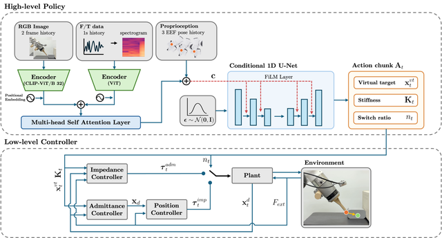
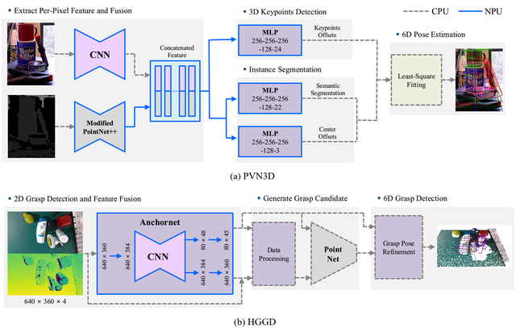

|
Youngjin Seo I'm an Integrated M.S./Ph.D. student in the Robotics and Intelligent System Engineering Lab (RISE Lab) at Sungkyunkwan University (SKKU), advised by Prof. Hyungpil Moon. I'm interested in robot learning for manipulation, with a focus on imitation learning, vision-language-action (VLA) models, and force-based policies. |
{kind=link}
Education
|
Publications |

|
EquiGQNet: Fast Grasp Quality Evaluation via Shared Equivariant Point Cloud Encoding
Sungwon Seo, Jaeseog Won, Jiyou Shin, Youngjin Seo, Hyunjun Kim, Seokmin Yoon, Tuan Luong, Hyungpil Moon arXiv, 2026 project page / arXiv A 6-DoF grasp quality evaluator that replaces per-candidate re-encoding with an SO(3)-equivariant encode-once-then-rotate scheme, reusing a shared scene encoding while keeping grasp-relative local geometry. |
|
 |
URF: A Unified Robot Control-Policy Framework for Stable Contact Aware Manipulation
Jiyou Shin, Youngjin Seo, Jaeseog Won, Sungwon Seo, Hyunjun Kim, Seokmin Yoon, Tuan Luong, Hyungpil Moon arXiv, 2026 project page / arXiv A manipulation policy that predicts not only a compliant action but also the controller behavior used to execute it, jointly outputting a virtual target, a stiffness matrix, and an impedance-admittance switch ratio. |
|
 |
Benchmarking 6D Pose Estimation and 6-DoF Grasp Detection on a Low-Power NPU: Case Studies with PVN3D and HGGD
Youngjin Seo*, Hyojun Yun*, Hong-ryul Jung, Hyungpil Moon (* equal contribution) International Conference on Control, Automation and Systems (ICCAS), 2025 paper A benchmark of PVN3D and HGGD on a low-power NPU, measuring whether 6D pose estimation and 6-DoF grasp detection stay practical under embedded compute budgets. |
Projects |
|
Development of a K-Logistics Humanoid Robot Integrated with a High-Sensitivity Robotic Hand Based on a Multimodal AI Foundation Model
Sep. 2025 – present |
|
Development of a SLAM-Based Drone System for Cart Monitoring
Apr. 2026 – Aug. 2026
|
|
Development of Core Technology for Mobile Manipulator for 5G Edge-Based Transportation and Manipulation
Jun. 2025 – Dec. 2025
|
|
Development of Low-Cost, High-Performance Visual Sensor Technology Integrated with AI Semiconductors and AI Algorithms Designed for Robots
Dec. 2024 – Nov. 2025 |
|
Development of a Simulation Drone Competition Utilizing Realistic Environments and Drone Dynamics
Mar. 2023 – Dec. 2023
|
Teaching
|
|
Template from Jon Barron's website. |